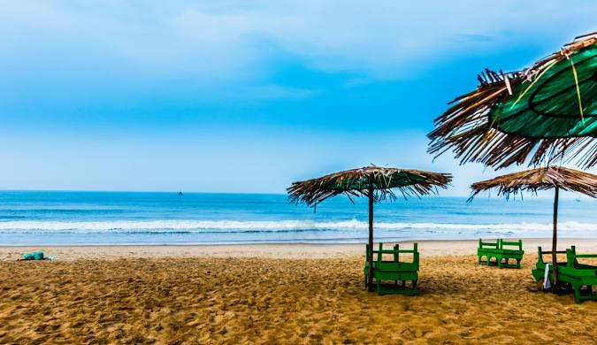
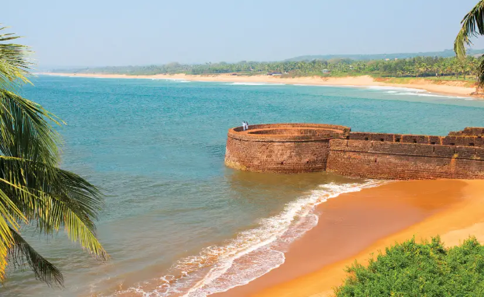

Goa
Goa, located on the southwestern coast of India, is a state known for its vibrant culture, stunning beaches, and rich history. Here's a brief overview of Goa and its significance as a popular tourist destination
Interdution
- Location: Goa is situated on the Arabian Sea coast, bordered by the states of Maharashtra and Karnataka.
Capital: Panaji (Panjim)
Population: Known for its diverse population, influenced by Indian and Portuguese cultures.
-
Capital: Panaji (Panjim)
Population: Known for its diverse population, influenced by Indian and Portuguese cultures.
Calangute

Calangute is a town in the western Indian state of Goa. Standing on the shores of the Arabian Sea, it’s home to long, sandy Calangute Beach, lined with restaurants and bars. Farther north, Baga Beach is a popular spot for water sports. To the south, the sturdy walls of Aguada Fort, built in the early 1600s under Portuguese colonial rule, surround a 19th-century lighthouse.
Candolim Beach
One of the longest beaches in Goa, Candolim Beach is also sometimes called the gateway to the other popular beaches in the state. The beach that begins from Fort Aguada is comparatively quieter and is perfect for lazing, though for watersports lovers, there are some activities like parasailing and water skiing.
The beach is quite popular amongst the people from the Rajneesh Ashram in Pune who visit here on a short break. The Candolim-Calangute Road is dotted with a number of shops and restaurants for the tourists to shop and hangout. People who are seeking a quieter staying place in Goa usually book their hotel near Candolim Beach.

for more information